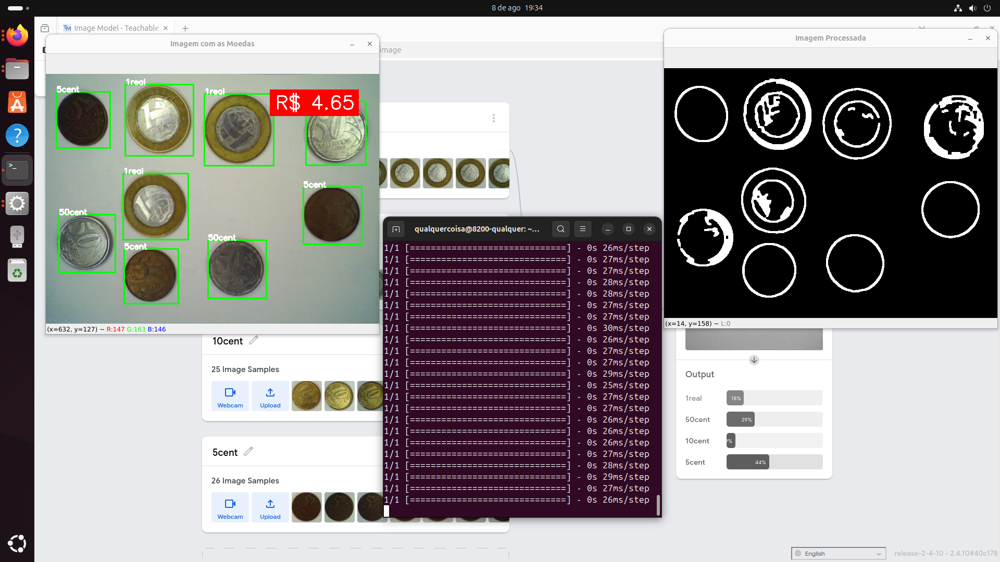

Ah, meu filho, eu fiquei besta com esse sisteminha: botei as moedas ali e ele contou tudo certinho, sem eu penar.
Pra mim, que erro fácil e confundo 1 real com 50 centavos quando a vista cansa, foi uma bênção.
Não precisei chamar neto nem vizinho; na hora já apareceu o total e eu fiquei mais segura.
É do jeitinho que eu sonhava: só apontar e ele dizer quanto deu.
No meu serviço de costura, receber troco certo é importante, e agora não fico mais aflita.
A tal da caixinha com luz ajuda, viu? Fica tudo mais nítido e rápido.
Se eu puder pedir uma coisinha: acrescentar as moedas que faltam, tipo 10 e 25 centavos.
De resto, só agradecer: simples, direto e muito útil pra gente mais antiga.
Etapa 8: Seminário S2 dos Trabalhos - Apresentação
INTEGRANTES:
Igor Domingos da Silva Mozetic - 11202320802
Jhonattan Ferreira Machado - 11202320245
Mikael Alves Monteiro - 21055813
Data de Realização do trabalho: 11/08/2025
Data de Publicação do trabalho: 17/08/2025
Tema: Sistema de Contagem de Moedas Brasileiras com Visão Computacional
Para realizar o download da apresentação em PDF realizada para a ETAPA 8, clique aqui
Caso deseje acessar a apresentação pela WEB, clique aqui
Explanação
Nessa etapa da apresentação, são inseridos o contexto que foi utilizado para o desenvolvimento do trabalho, desde a entrevista empática para identificação do problema gerador do projeto até a definição final do tema que foi abordado.
Também nessa etapa foi abordado o início do desenvolvimento do escopo do projeto, o seja a parte da Modelagem do Sistema.
Segue os links das etapas onde foi abordado cada um desses passos:
- Entrevista Empática A entrevista escolhida foi a primeira desse arquivo aqui
- Contexto e Cenário de Aplicação (CA)
- Modelagem Funcional do Sistema (MF)
Demonstração prática
Nessa etapa da apresentação, é realizada a utilização do sistema no computador no laboratório.
Segue algumas imagens e vídeos durante a apresentação para a sala:
Resultados
Nessa etapa da apresentação, é exposto o desempenho do sistema durante o Teste de Campo e as opiniões dos usuários ao utilizar o sistema.
Em relação ao desempenho do sistema durante o Teste de Campo:
O desenvolvimento do sistema resultou em um protótipo funcional em tempo real, capaz de identificar e contabilizar moedas. Durante os testes, o software demonstrou capacidade de detecção das moedas de R$ 0,05, R$ 0,50 e R$ 1,00, mesmo em situações nas quais a luminosidade não era adequada e a superfície apresentava algum tipo de anomalia.
Os experimentos realizados em ambientes controlados de laboratório mostraram que o sistema alcança um bom nível de precisão, com identificação correta das moedas e contabilização ao serem inseridas ou retiradas da área de detecção.
A partir dos questionários aplicados junto aos usuários, destacam-se alguns pontos positivos percebidos:
- Praticidade e facilidade de uso: mesmo pessoas sem experiência técnica conseguiram utilizar o sistema sem dificuldades.
- Precisão na contagem: usuários relataram confiança na identificação das moedas, mesmo em condições de iluminação não ideais.
- Aplicabilidade social: o sistema foi considerado útil especialmente para idosos ou pessoas com baixa visão, por reduzir esforço e risco de erros.
- Rapidez: o processo de contabilização é automático e imediato, o que poupa tempo em comparação à contagem manual.
- Inovação: a utilização de técnicas de visão computacional para uma tarefa cotidiana foi considerada um diferencial.
Em termos de limitações observadas, foi relatado que o sistema pode apresentar dificuldades quando as moedas estão muito próximas umas das outras ou em casos de forte reflexão de luz. Ainda assim, os resultados demonstram que o protótipo atendeu ao objetivo inicial do projeto, confirmando sua viabilidade como solução prática para ambientes que demandam manipulação de moedas.
Após a apresentação do sistema para a usuária 0 do projeto, a senhora entrevistada cujo problema foi escolhido como base para o desenvolvimento da solução, ela nos deu o seguinte depoimento:
Segue os gráficos com as perguntas e respostas tanto do questionário com relação aos conceitos da disciplina e em relação aos experimentos realizados, quanto o questionário ESO (Enquete Subjetiva de Opinião):
Questionário


Questionário ESO (Enquete Subjetiva de Opinião)
Nesse questionário foram realizadas perguntas subjetivas e perguntas com escalas de Discordo Totalmente até Concordo Totalmente.
Segue as peguntas subjetivas com as respostas mais importantes:
1. O que você mais gostou no sistema apresentado?
- A contabilização das moedas em tempo real.
- Detecção automática ao retirar/inserir moedas.
- A utilidade e aplicação prática do projeto.
- Da facilidade e precisão que o sistema identifica as moedas mesmo com 'sujeira'.
- Praticidade e facilidade de uso.
2. De que maneira você acredita que este sistema poderia facilitar suas atividades diárias relacionadas à manipulação ou conferência de moedas?
- Em mercados, lojas pequenas e outros comércios seria muito benéfico.
- Pode auxiliar pessoas com mais idade que possuem dificuldade para contar moedas.
- Rapidez, precisão na contagem e redução de erros.
- Facilitaria a vida de pessoas idosas ou com problemas de visão.
- Ajudar a calcular o troco em compras do dia a dia.
3. Quais dificuldades ou problemas você encontrou durante o uso do sistema?
- Dificuldade com a iluminação alterando o valor das moedas.
- O programa demora para atualizar a imagem devido ao alto processamento.
- Se as moedas estiverem coladas, a identificação pode falhar.
- Reflexos da luz podem impedir a detecção em alguns casos.
- Moedas muito próximas apresentam dificuldade na identificação.
4. Que sugestões você daria para melhorar o sistema e torná-lo mais útil?
- Incluir reconhecimento de cédulas além das moedas.
- Adicionar contador lateral com a quantidade de moedas de cada valor.
- Melhorar a eficiência do código ou usar hardware mais rápido.
- Aumentar a portabilidade do sistema (ex.: rodar em dispositivos móveis).
- Possibilitar salvar valores anteriores para somas em sequência.
Segue os gráficos com os feedback quantitativos de acordo com a escala estipulada.


Demonstração prática
Nessa etapa da apresentação, é colocado os vídeos gravados durante a Etapa 6: Teste de Campo do SPV (TC), recordando a explicação dos integrantes do grupo e a aplicação do sistema.
Segue os vídeos e uma imagem durante o Teste de Campo:

Conclusões
Nessa etapa da apresentação, são apresentadas as metas alcançadas após a finalização do projeto e possíveis explorações futuras, ou seja, caminhos que o sistema pode adotar para continuar o seu desenvolvimento e aperfeiçoamento.
Metas alcançadas
- Desenvolvimento de uma aplicação prática, simples e funcional de visão computacional.
- Identificação e contagem de moedas brasileiras (R$ 0,05, R$ 0,50 e R$ 1,00) automaticamente.
- Exibição na tela, em tempo real, o nome de cada moeda detectada.
- Realização da soma e apresentação do valor total acumulado.
- Garantia da acessibilidade para usuários leigos (idosos, baixa alfabetização digital).
- Operação do sistema sem necessidade de dispositivos especiais, apenas webcam + computador simples.
- Garantia de maior autonomia, rapidez e precisão na conferência de pagamentos.
- Eliminação de interação textual/numérica, dando foco em interface visual intuitiva.
- Exemplo prático do potencial da visão computacional para inclusão digital.
Explorações futuras
Algumas explorações futuras que o projeto pode seguir são:
- Como foi colocado pela entrevista originária do tema do projeto, é possível acrescentar as moedas brasileiras restantes (R$ 0,10 e R$ 0,25)
- Como foi colocado pelos usuários durante o Teste de Campo:
- Reconhecimento de cédulas: ampliar o sistema para identificar e somar notas de dinheiro.
- Contador por denominação: além do valor total, exibir quantidade de moedas de cada tipo detectada.
- Melhoria de desempenho: otimizar código ou utilizar hardware mais eficiente para atualização mais rápida das imagens.
- Expansão internacional: treinar modelo para reconhecer moedas de outros países.
- Otimização da imagem: aplicar técnicas avançadas de pré-processamento e detecção (ex.: HoughCircles).
- Histórico de contagens: incluir botão para salvar valores anteriores e permitir somas em sequência.